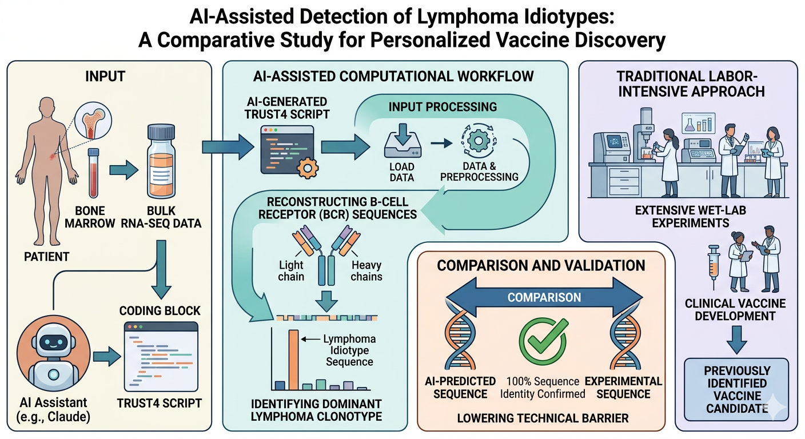
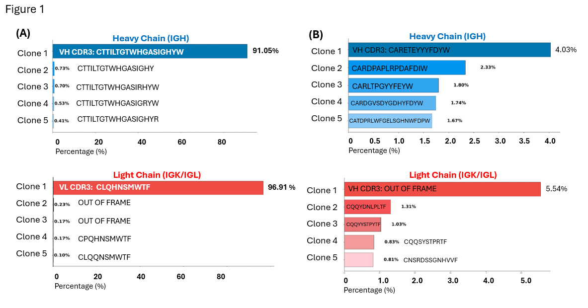
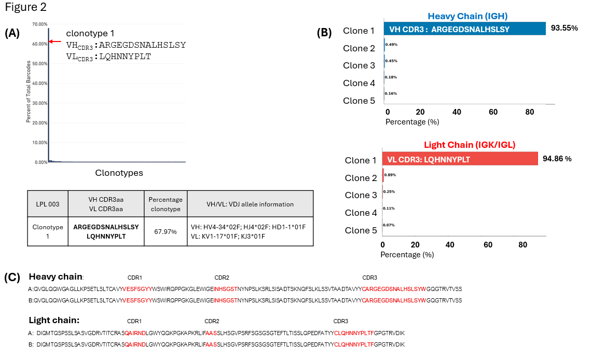

Objective
The primary objective of this study is to determine whether an AI-assisted computational workflow using Claude-generated code can enable non–bioinformatics specialists to efficiently perform complex genomic analyses for identifying patient-specific lymphoma idiotype (Id) sequences from bulk RNA sequencing data. A major motivation for this project is to demonstrate that advanced bioinformatics analyses, which traditionally require extensive computational expertise and substantial time investment, can be executed rapidly and reproducibly with the assistance of AI-driven tools.
Specifically, we will evaluate whether Claude can be used to implement and run the TRUST4 algorithm (Song et al., Nat Methods 2021) to reconstruct B-cell receptor (BCR) sequences and identify the dominant lymphoma clonotype from bulk RNA-seq data derived from patient bone marrow samples. Importantly, the predicted BCR sequences will be compared with the patient-specific idiotype sequences that were previously selected as vaccine candidates through extensive wet-laboratory experimentation and clinical vaccine development.
By demonstrating that the same lymphoma idiotype sequences identified through labor-intensive experimental approaches can be recovered using an AI-assisted analysis of bulk RNA sequencing data, this study will provide proof-of-concept that AI-enabled computational workflows can substantially lower the technical barrier for translational cancer genomics. Successful completion of this project would establish Claude as a practical platform for executing complex bioinformatics pipelines and for accelerating the identification of patient-specific tumor immunoglobulin sequences relevant to personalized lymphoma vaccine development.

Methods
Bone marrow samples were obtained from five patients who received personalized idiotype DNA vaccines. Bone marrow mononuclear cells (BMMCs) were isolated, and B cells were purified prior to sequencing. Bulk RNA sequencing was performed on the purified B-cell populations to capture immunoglobulin transcript repertoires.
Raw RNA-seq data were analyzed using the TRUST4 algorithm, executed through a computational pipeline generated and orchestrated using Claude-assisted code development. Claude was used to generate and implement scripts for running TRUST4, managing sequencing input files, and extracting reconstructed B-cell receptor (BCR) sequences.
For each patient, the predominant BCR sequence reconstructed by TRUST4 was identified and compared with the idiotype sequence encoded in the patient-specific Id-DNA vaccine administered in the clinical trial. This comparison served as a biological validation of the computational results and allowed us to evaluate whether Claude-assisted bioinformatics workflows can accurately identify lymphoma-specific BCR sequences from bulk RNA sequencing data.
To further validate the analytical pipeline, lymphoplasmacytic lymphoma/Waldenström's macroglobulinemia (LPL/WM) cell lines, BCWM.1 and MWCL-1, were included as positive controls. Bulk RNA sequencing data generated from these cell lines were analyzed using the same TRUST4 pipeline to confirm that dominant BCR clonotypes could be reliably reconstructed from known lymphoma-derived B cells. As a negative control, B cells were isolated from peripheral blood mononuclear cells (PBMCs) obtained from healthy donors and subjected to bulk RNA sequencing and TRUST4 analysis. These control analyses were used to assess the specificity of the pipeline and to distinguish tumor-associated dominant clonotypes from the polyclonal BCR repertoires typically observed in healthy individuals.
Results
To evaluate the practical applicability of this analytical framework for researchers lacking formal bioinformatics training, especially when utilizing AI assistance from Claude, we employed the MWCL-1 LPL cell line as a positive control. As expected, TRUST4 analysis of bulk RNA sequencing (bulk RNA-seq) data revealed a highly clonal B-cell receptor (BCR) repertoire. A single dominant clonotype constituted 91.05% of the IGH sequences and 96.91% of the IGK/IGL sequences (Figure 1A). In contrast, normal B cells demonstrated a polyclonal repertoire, with the predominant clonotype accounting for only 4.03% of IGH sequences and 5.54% of IGK/IGL sequences (Figure 1B). These data demonstrate that bulk RNA sequencing-based BCR reconstruction can effectively differentiate monoclonal lymphoma cells from normal polyclonal B cells.

Having established the analytical framework for reconstructing lymphoma-derived immunoglobulin sequences from transcriptomic data, we next asked whether the patient-specific idiotype identified by single-cell profiling could be recovered concordantly from bulk RNA-seq. In patient LPL003, single-cell RNA-seq of tumor B cells identified a dominant B cell receptor (BCR) clonotype comprising 67.97% of all detected clonotypes, consistent with marked clonal expansion of the lymphoma population (Fig. 3A). This paired heavy- and light-chain variable region sequence was used for generation of the patient-specific idiotype vaccine. Analysis of matched bulk RNA-seq from the same sample using TRUST4 independently reconstructed the identical dominant VH and VL sequences (Fig. 3B). Amino acid alignment further demonstrated complete sequence concordance between the two approaches, with 100% identity across the heavy- and light-chain variable regions, including CDR1, CDR2 and CDR3 (Fig. 3C).
These findings show that AI-assisted analysis with Claude enables rapid and accurate identification of lymphoma-specific idiotype sequences from transcriptomic data, providing an accessible framework for personalized Id-vaccine design.

Discussion
In summary, our study demonstrates that lymphoma-specific idiotype sequences can be accurately recovered from transcriptomic data using an AI-assisted analytical workflow built with Claude. By showing concordance between single-cell and bulk RNA-seq–based BCR reconstruction, these findings establish a practical framework for patient-specific Id-vaccine design. Notably, this approach can be implemented effectively even by investigators without formal bioinformatics training, substantially lowering the technical barrier to personalized vaccine development. More broadly, our results highlight the potential of AI-assisted bioinformatics to accelerate and democratize the translation of sequencing data into individualized immunotherapeutic strategies.